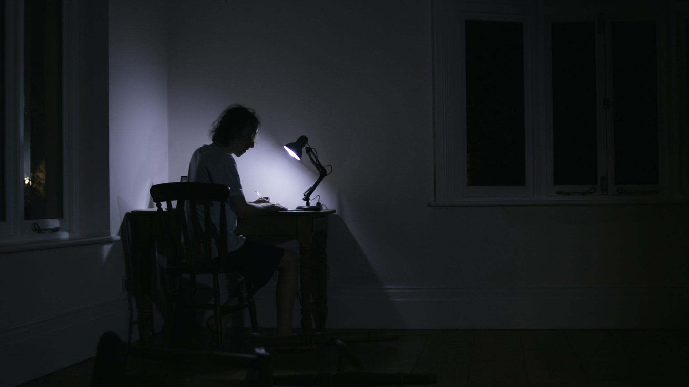
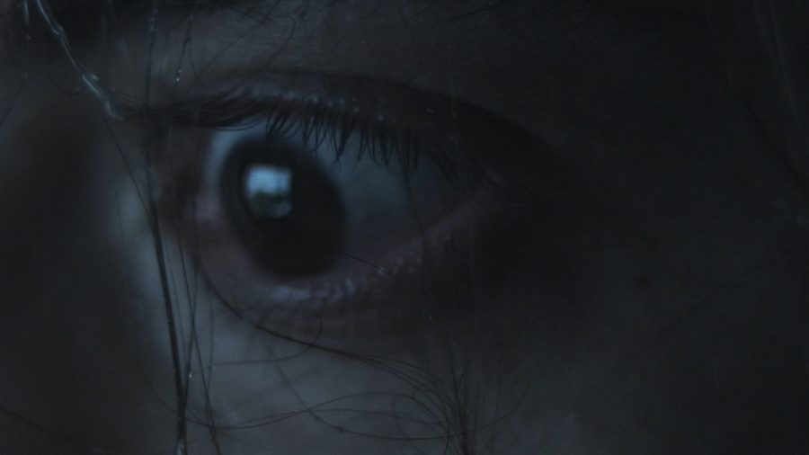
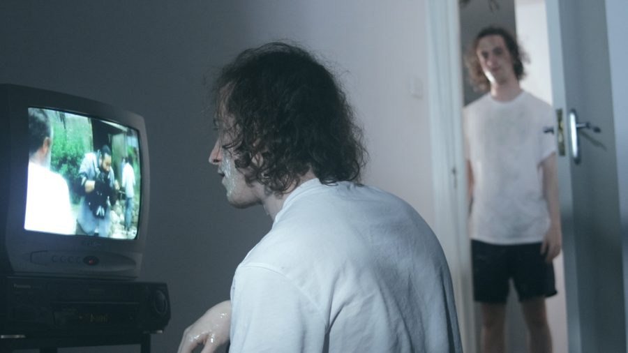
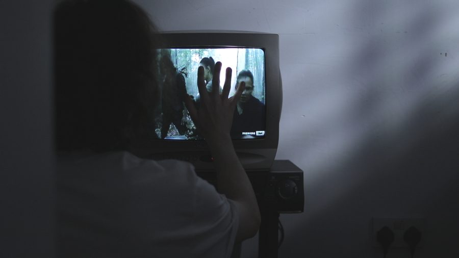
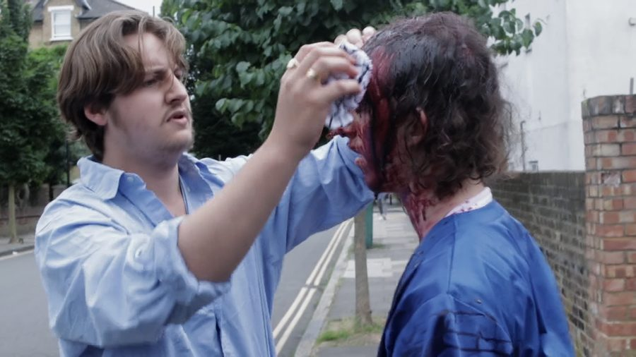
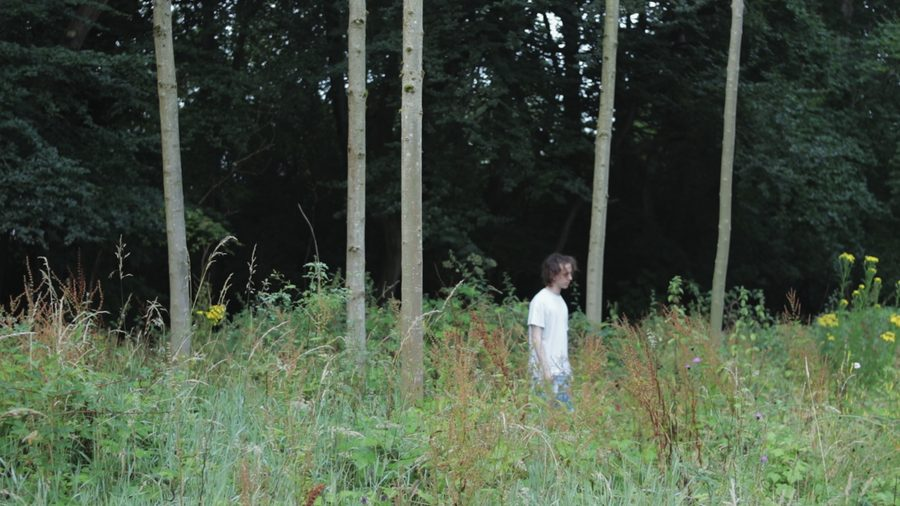
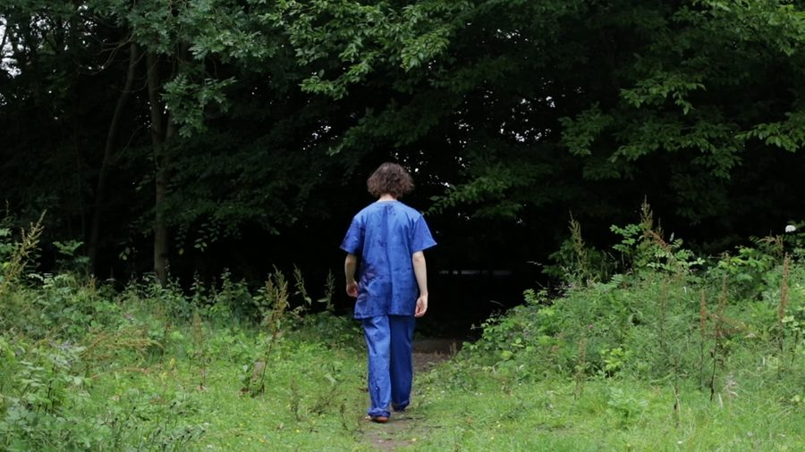
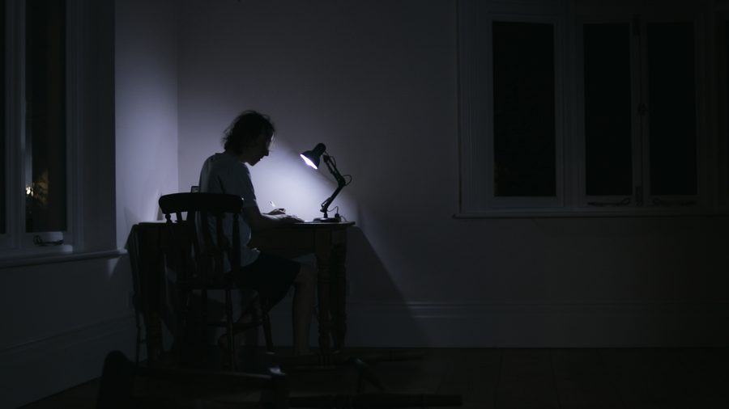

Watch the full film
Break the Cycle
A man wakes up in a new, hazy world and discovers the reason for his futile existence.
A short science-fiction film written, directed, produced and edited by Francesca Iannucci, who also appears on screen.
Stills









Next film
It’s Really Beautiful Out
View film →